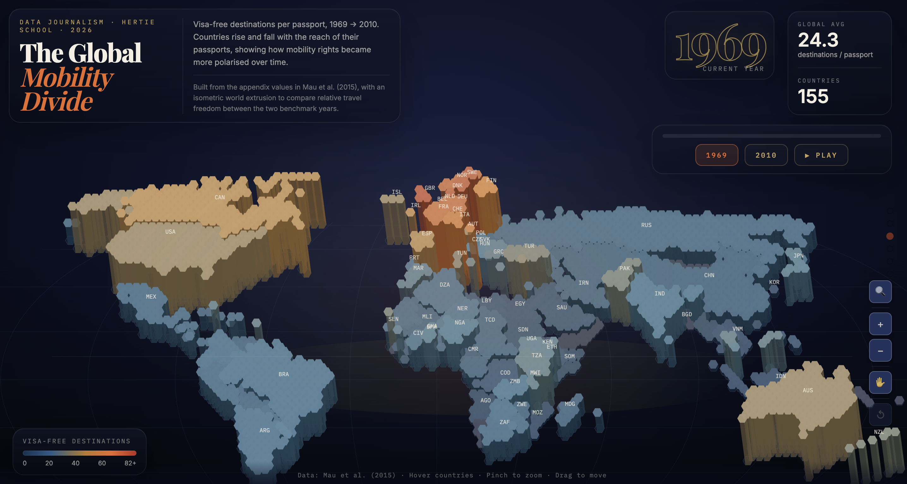
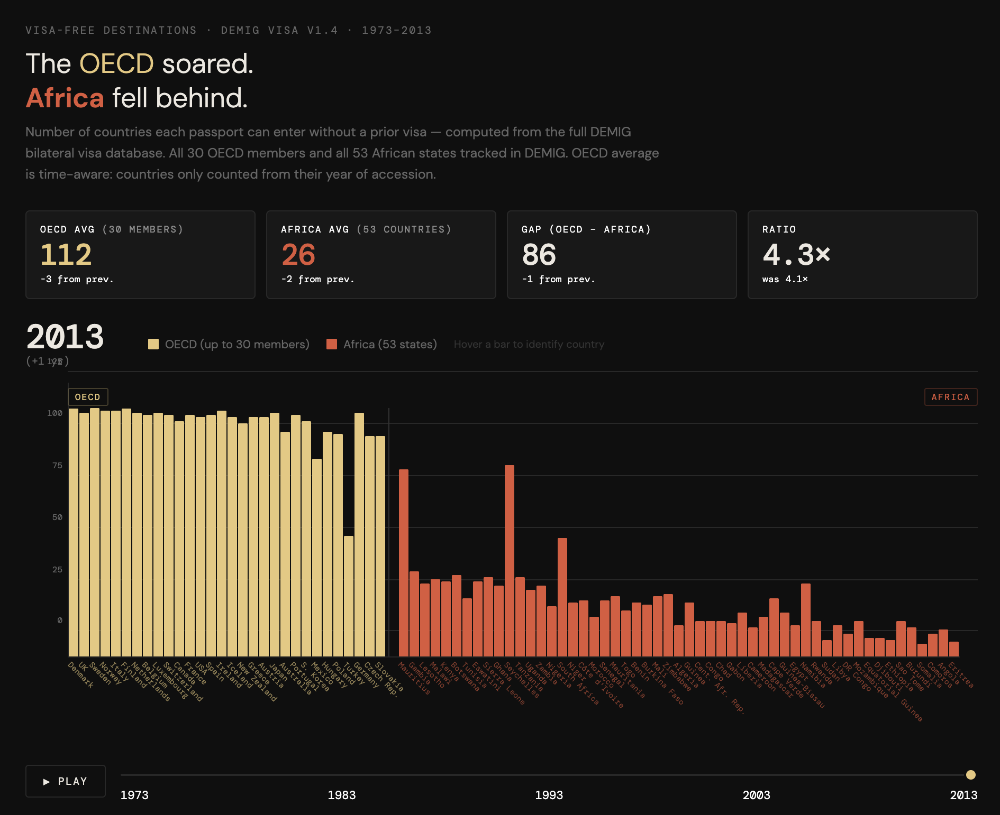
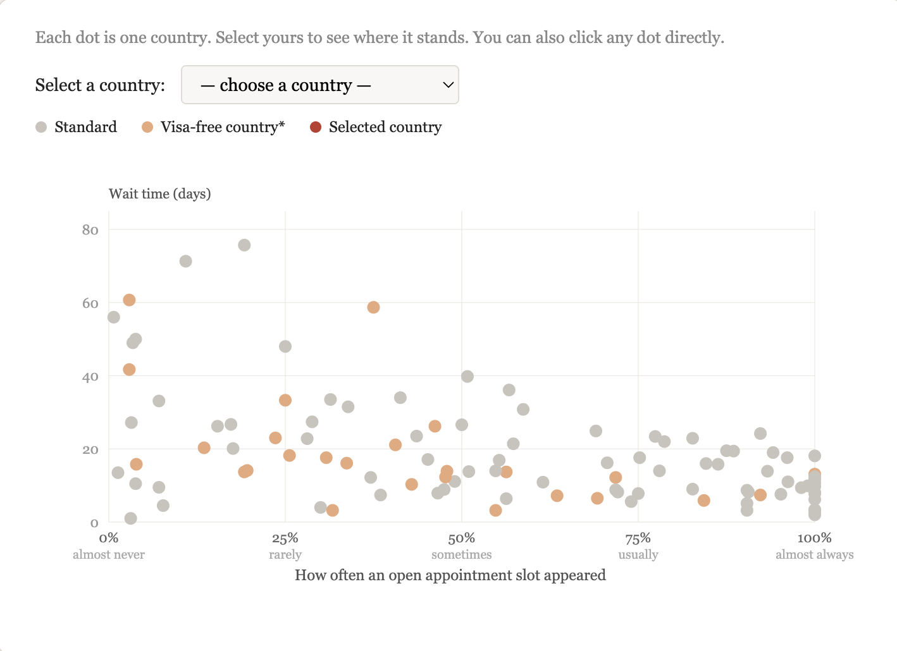
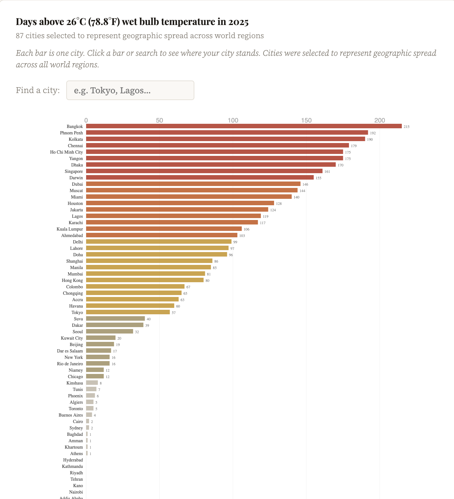

Freelance Data Visualiser · Berlin

An animated map showing how visa-free travel rights shifted across countries from 1969 to 2010.

A bar-chart animation showing how visa-free travel rights diverged between OECD and African nations from 1969 to 2013.

Interactive scatter chart exploring visa appointment availability and wait times across countries.

Examining heat patterns and wet-bulb temperature trends across cities using processed climate data.